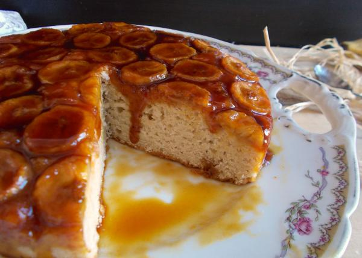

 Mussum Ipsum, cacilds vidis litro abertis. Copo furadis é disculpa de bebadis, arcu quam euismod magna. Interagi no mé, cursus quis, vehicula ac nisi. Em pé sem cair, deitado sem dormir, sentado sem cochilar e fazendo pose. Praesent malesuada urna nisi, quis volutpat erat hendrerit non. Nam vulputate dapibus. Paisis, filhis, espiritis santis. Mauris nec dolor in eros commodo tempor. Aenean aliquam molestie leo, vitae iaculis nisl. Não sou faixa preta cumpadi, sou preto inteiris, inteiris. Suco de cevadiss, é um leite divinis, qui tem lupuliz, matis, aguis e fermentis.
Desenvolvido Por 1TDS3 - FIAP © 2019